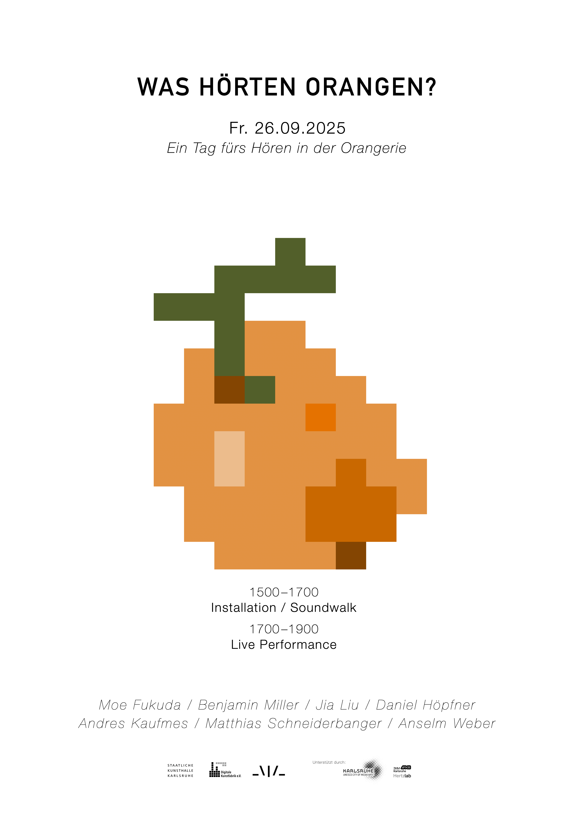

_\|/_
TOPLAP Karlsruhe
Was Hörten Orangen - Ein Tag fürs Hören in der Orangerie
-
Orangerie Karlsruhe
Hans-Thoma-Straße 6, 76133 Karlsruhe
with Moe Fukuda, Benjamin Miller, Jia Liu, Daniel Höpfner, Andres Kaufmes, Matthias Schneiderbanger and Anselm Weber
Free Entry
Die akustische Eigenschaft ist ein unsichtbarer, aber wesentlicher Teil jeder Architektur – sie prägt unsere Wahrnehmung, unsere Erfahrungen und trägt unsere historisch-kulturellen Erinnerungen.
Was hörten Orangen? Diese Frage inspiriert uns, den Raum klanglich erlebbar zu machen – durch Klanginstallationen, akustische Wanderungen und Sound-Performances, die in der einzigartigen Raumakustik ihre volle Entfaltung finden.
Im Rahmen von Room to Grow Staatlichen Kunsthalle Karlsruhe, anlässlich der Neueröffnung der Orangerie, veranstaltet die Digitale Kunstfabrik e.V. gemeinsam mit TOPLAP Karlsruhe und der Staatlichen Kunsthalle Karlsruhe einen Tag des Hörens in der Rotunde der Orangerie. Kommt vorbei und lernt mit uns den Raum neu kennen – durch das Hören 👂
15:00 – 17:00
Installation / Soundwalk
17:00 – 19:00
Live Performance
Installations and Performances from:
Moe Fukuda
Benjamin Miller
Jia Liu
Daniel Höpfner
Andres Kaufmes
Matthias Schneiderbanger
Anselm Weber
Gefördert durch das Kulturamt der Stadt Karlsruhe im Rahmen von UNESCO City of Media Arts mit technischer Unterstützung durch das ZKM | Hertzlab
Organizers: _\|/_ TOPLAP Karlsruhe & Digitale Kunstfabrik e.V.